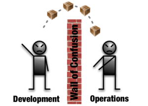
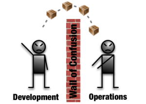
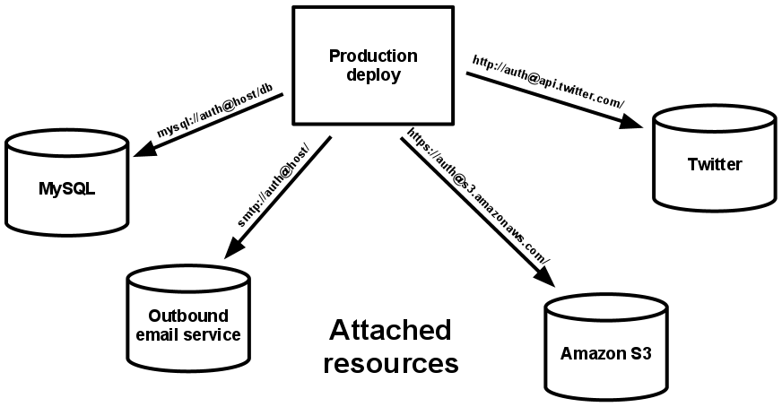

Twelve-Factor Apps
A DevOps Olive Branch
Steve Desmond
Ithaca Web People – June 4, 2019
"DevOps"
DevOps vs Traditional IT
 

DevOps History
Andrew Schafer, Patrick Dubois (Agile Toronto, 2008)
"Agile Infrastructure" / "Agile System Administration"
John Allspaw, Paul Hammond (Velocity, 2009)
"10 Deploys per Day: Dev and Ops Cooperation at Flickr"
Patrick Dubois, Kris Buytaert (Ghent, 2009)
"DevOpsDays" Conference
DevOps, Defined
John Willis, Damon Edwards (2010)
"CAMS Model"
- Culture
- Automation
- Measurement
- Sharing
"Adventures in Enterprise"
Steve Desmond .ca / talks / Dev Ops Days PDX"The Twelve-Factor App"
https://12factor.net (Heroku, ~2011)
A methodology for building software-as-a-service apps
| Declarative formats for setup automation | Minimizes time and cost for new developers | |
| Clean contract with the OS | Maximizes portability | |
| Deployable on modern cloud platforms | Minimizes servers and sysadmins | |
| Repeatable builds/deployments | Minimizes diff between dev and prod, enables CD | |
| Scalable without significant changes to tooling, architecture, or practices | ||
2011
- Cloud? (2007)
- GitHub? (2008)
- DevOps? (2009)
- Continuous Delivery? (2010)
- Docker? (2013)
The Twelve Factors
- Codebase
- Dependencies
- Config
- Backing services
- Build, release, run
- Processes
- Port binding
- Concurrency
- Disposability
- Dev/prod parity
- Logs
- Admin processes
I. Codebase
One codebase tracked in revision control, many deploys
- 1:1 Codebase : App
- Multiple apps?
- Split common code out into standalone libraries
- Multiple codebases?
- Not an app, but a distributed system
I. Codebase
Dev / Staging / QA / Prod branches?
All environments from trunk / master
II. Dependencies
Explicitly declare and isolate dependencies
A twelve-factor app never relies on implicit existence of system-wide packages
Use your package manager!
II. Dependencies
Twelve-factor apps also do not rely on the implicit existence of any system tools.
If the app needs to shell out to a system tool, that tool should be vendored into the app.

III. Config
Store config in the environment
Config is everything that is likely to vary between deploys
- Connection strings
- Credentials
- URLs
III. Config
Does not include internal application config, such as config/routes.rb in
Rails
Config that does not vary between deploys is best done in the code
III. Config
The twelve-factor app stores config in environment variables
- granular
- orthogonal
- never grouped together as “environments”
- independently managed for each deploy
III. Config
Scales up smoothly as the app naturally expands into more deploys over its lifetime.
12 Factor says nothing about how environment variables get set
IV. Backing services
Treat backing services as attached resources
- datastores (MySQL)
- messaging/queueing (RabbitMQ)
- SMTP (Postfix)
- caching (Memcached)
- metrics (New Relic, Loggly)
- assets (S3)
- public APIs (Twitter, Google Maps)
IV. Backing services
A twelve-factor app makes no distinction between local and third party services
Goal: swap local/third-party services without code changes
IV. Backing services
V. Build, release, run
Strictly separate build and run stages
-
Build
- converts a code repo into an executable bundle
- fetches vendors dependencies and compiles binaries and assets
-
Release
- combines build with the deploy’s current config
- ready for immediate execution in the execution environment
-
Run
- runs the release in the execution environment
V. Build, release, run

V. Build, release, run
VI. Processes
Execute the app as one or more stateless processes
Any data that needs to persist must be stored in a stateful backing service, typically a database.
Sticky sessions are a violation of twelve-factor and should never be used or relied upon.
VI. Processes

VI. Processes
VI. Processes
Execute the app as one or more stateless processes
Process ~ Microservice
VII. Port binding
Export services via port binding
-
node --port 5000 -
rails server -p 5000 -
php -S http://localhost:5000 -
dotnet --urls http://*:5000
VIII. Concurrency
Scale out via the process model
VIII. Concurrency
Scale out via the process model
IX. Disposability
Maximize robustness with fast startup and graceful shutdown
- started or stopped at a moment’s notice
- minimize startup time
- a few seconds from launch until ready for requests
- shut down gracefully when they receive a SIGTERM
- robust against sudden death
X. Dev/prod parity
Keep development, staging, and production as similar as possible
- Time gap: weeks down to hours
- Personnel gap: no specializations
- Tools gap: same environments
resist the urge to use different backing services between development and production
XI. Logs
Treat logs as event streams
- no concern with routing or storage of its output stream
- should not attempt to write to or manage logfiles
- each running process writes its event stream, unbuffered, to
stdout - each process’ stream will be captured by the execution environment
XII. Admin processes
Run admin/management tasks as one-off processes
rake db:migrate
- run in an identical environment
- must ship with application code
- same dependency isolation techniques
XII. Admin processes
Run admin/management tasks as one-off processes
-
Do not
sshinto production - Automate it as part of deployment
- Make it a feature of your app
The Twelve Factors
- Codebase
- 1:1, single deploy branch
- Dependencies
- Use package manager
- Config
- Use environment variables
- Backing services
- Treat local/remote the same
- Build, release, run
- Separate these steps
- Processes
- Stateless, share nothing
- Port binding
- Communicate via ports, not server modules
- Concurrency
- Scale out via processes
- Disposability
- Fast startup, shutdown
- Dev/prod parity
- As close to identical as possible
- Logs
- Stream to
stdout - Admin processes
- Run as one-off processes